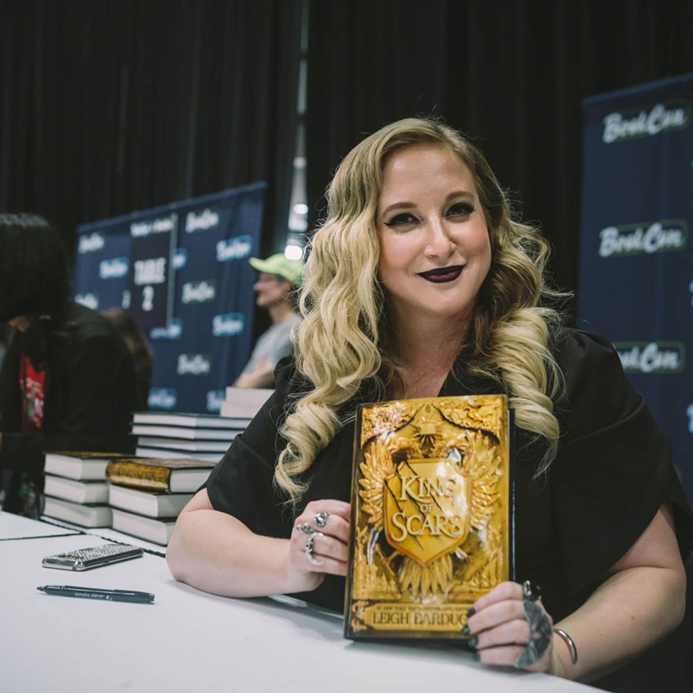
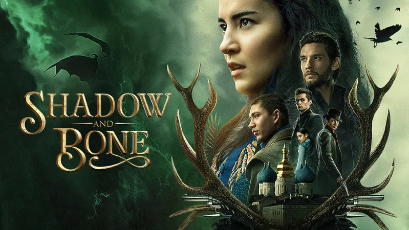

who is Leigh Bardugo?
Ли Бардуго— американская писательница, автор фэнтези-бестселлеров «Тень и кость» и «Шестёрка воронов»

Ли Бардуго родилась в 1975 году в Иерусалиме, после переехала в Лос-Анджелес, где воспитывалась бабушкой и дедушкой.
В 1997 году получила диплом Йельского университета по специальности «Английский язык». До публикации своего первого романа придумывала трейлеры к фильмам, а также работала визажистом в Голливуде.
К писательству ее подтолкнула семейная драма: смерть отца и тяжелый развод.
Также у писательницы есть собственная музыкальная группа — Captain Automatic.
В книге «Шестерка Воронов» (англ. Six of Crows) в разделе «Благодарности» писательница заявляет, что чувствует родство с персонажем Казом Бреккером, так как страдает заболеванием «остеонекроз», из-за чего так же, как и он, испытывает сложности с ходьбой.
How did it all start?
Дебютный роман Бардуго «Тень и Кость» (англ. Shadow and Bone), первая книга трилогии «Гриши», был опубликован в 2012 году. Ли Бардуго расказывает, что в основу книг легли славянские мифы. Роман переносит читателя в магический мир некогда великой страны Равки, ныне раздробленной гражданской войной. С этой книги начинается история гришей — людей с магическими способностями. Роман занял 8-е место в списке бестселлеров New York Times для детей. В 2013 и 2014 годах издательство Macmillan опубликовало продолжение: романы «Штурм и Буря» (англ. Siege and Storm) и «Крах и Восход» (англ. Ruin and Rising)
But what now?
В январе 2019 года Netflix анонсировал съемки сериала, основанного на романах «Тень и Кость» и «Шестерка Воронов». Режиссером картины выступил Ли Толанд Кригер.
Съемки сериала проходили в Будапеште и завершились в феврале 2020 года.
Первая из восьми серий первого сезона вышла 23 апреля 2021 года.
В числе создателей сериала — сценарист Эрик Хайссерер («Прибытие») и исполнительный продюсер Шон Леви («Очень странные дела»)
В конце 2019 года Amazon Studios выкупила права на экранизацию романа «Девятый дом». Бардуго выступит в качестве исполнительного продюсера сериала.
В 2022 году в Будапеште стартовали съёмки второго сезона сериала «Тень и Кость».

В сериию GrishaVerse входят:
Трилогия: Тень и Кость, Штурм и Буря, Крах и Восход
Дилогия: Шестерка Воронов и Продажное Королевство
Дилогия: Король шрамов и Правление Волков

Little content of the Trilogy
Окруженная врагами, некогда великая страна Равка разделена Тенистым Каньоном — полосой непроницаемой темноты, кишащей монстрами, которые жаждут человеческой плоти.
И теперь судьба нации в руках одинокой девушки Алины Старковой. Алина не ждала слишком многого от жизни. Оставшись сиротой в результате приграничной войны, она уверена только в одном человеке — своем лучшем друге по имени Мал.
Когда на Мала нападают волькры, в девушке пробуждается магическая сила такой мощи, что становится ясно: она способна спасти всю страну.
Алину увозят в королевский дворец, где будут тренировать как одну из гришей — представителей элитного сообщества магов во главе с загадочным Дарклингом.
Ей предстоит столкнуться с тайнами гришей... и своего собственного сердца.
What is Six of Crows about?
Кеттердам — шумный центр международной торговли, где по сходной цене можно купить все, и лучше других это знает юный гений преступного мира Каз Бреккер.
Ему выпадает шанс на похищение века, которое может сделать его невообразимо богатым. Но один он не справится...
Узник, обуреваемый жаждой мести. Стрелок, который любит испытывать судьбу.
Беглец из высших слоев общества. Шпионка, известная под кличкой Призрак. Девушка из магического ордена гришей с необычным даром.
Вор с талантом выходить сухим из воды.
Шесть опасных изгоев. Одно невозможное похищение.
Synopsis for "The King of Scars"
У Николая Ланцова всегда был этот дар: верить в невозможное и делать невозможное реальностью. Никогда не жаловаться и не сдаваться.
Никто не знает, как он смог выстоять в кровавой гражданской войне, разразившейся на родине юного короля.
Теперь, когда враги собираются у границ ослабленной внутренними распрями Равки, перед неунывающим молодым человеком стоят новые задачи: пополнить казну, найти союзников и возродить некогда великую армию гришей — людей с магическими способностями.
Николай готов рискнуть всем, чтобы спасти страну, даже если для этого придется вытащить на свет секреты, которым лучше оставаться похороненными, и разбередить раны, которые никогда не заживут...
Трилогия: Тень и Кость, Штурм и Буря, Крах и Восход
Дилогия: Шестерка Воронов и Продажное Королевство
Дилогия: Король шрамов и Правление Волков
И теперь судьба нации в руках одинокой девушки Алины Старковой. Алина не ждала слишком многого от жизни. Оставшись сиротой в результате приграничной войны, она уверена только в одном человеке — своем лучшем друге по имени Мал.
Когда на Мала нападают волькры, в девушке пробуждается магическая сила такой мощи, что становится ясно: она способна спасти всю страну.
Алину увозят в королевский дворец, где будут тренировать как одну из гришей — представителей элитного сообщества магов во главе с загадочным Дарклингом.
Ей предстоит столкнуться с тайнами гришей... и своего собственного сердца.
Ему выпадает шанс на похищение века, которое может сделать его невообразимо богатым. Но один он не справится...
Узник, обуреваемый жаждой мести. Стрелок, который любит испытывать судьбу.
Беглец из высших слоев общества. Шпионка, известная под кличкой Призрак. Девушка из магического ордена гришей с необычным даром.
Вор с талантом выходить сухим из воды.
Шесть опасных изгоев. Одно невозможное похищение.
Никто не знает, как он смог выстоять в кровавой гражданской войне, разразившейся на родине юного короля.
Теперь, когда враги собираются у границ ослабленной внутренними распрями Равки, перед неунывающим молодым человеком стоят новые задачи: пополнить казну, найти союзников и возродить некогда великую армию гришей — людей с магическими способностями.
Николай готов рискнуть всем, чтобы спасти страну, даже если для этого придется вытащить на свет секреты, которым лучше оставаться похороненными, и разбередить раны, которые никогда не заживут...